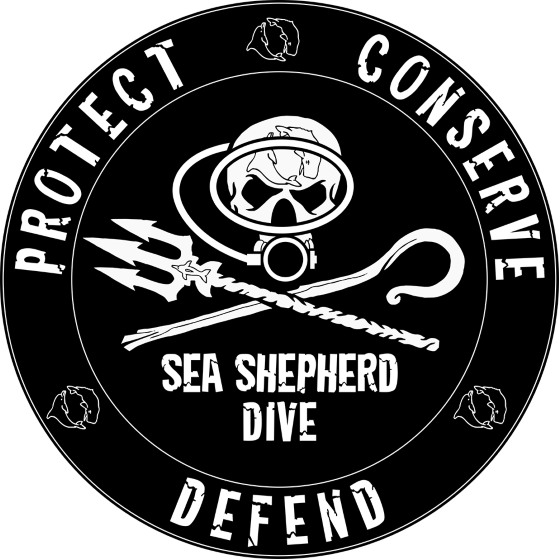
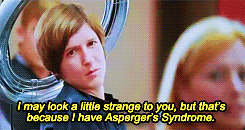

Arrrrr Pirates! I am Jules. 🧜♀️
I like the sea. A lot.

I love diving 🐚 and surfing 🏄♀️. I don't have a fixed home 🧳. And I am a proud Aspie 🧩.
Check my real website, silly!
I love diving 🐚 and surfing 🏄♀️. I don't have a fixed home 🧳. And I am a proud Aspie 🧩.
Check my real website, silly!I am a PADI Rescue Diver, but would you really trust me with your life? 😂
35 countries and counting...
Greta Thunberg says it's a superpower, I just say it is like being a jellyfish - I do life without understanding most of what's going on around me.
